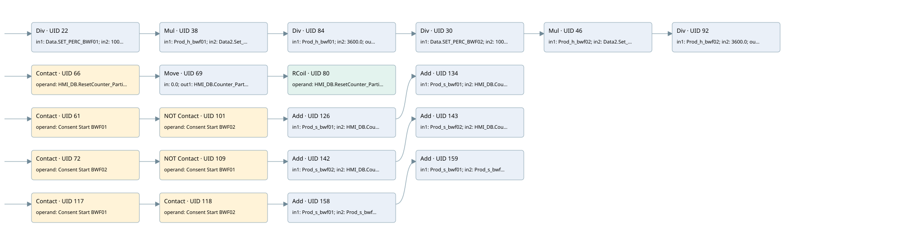

production counters
auto start motors · 검색 색인 순서 9 · 원본 내부 NID 추정 13
백업 PLF 원본의 2675012 바이트 위치에서 복원한 XML. 검색 문서 1849의 객체 키 16102200f172000000000000와 연결했다. 이름 해석 48/48개. 남은 RefId는 상수 또는 미해석 참조다.
연결 구조 다시 그리기
원본 Part/PCon/Wire를 이용한 연결도다. TIA 화면의 래더 배치 또는 실행 결과를 재현한 그림은 아니다. 핀 연결은 아래 표와 원본 XML을 기준으로 읽는다. 노드 위에 마우스를 두면 피연산자 이름을 볼 수 있다.

접점·코일·블록과 피연산자
| Part UID | Gate | Negated 핀 | 연결 피연산자 |
|---|---|---|---|
| 22 | Div | in1 = Data.SET_PERC_BWF01; in2 = 100.0; out = Prod_h_bwf01 | |
| 38 | Mul | in1 = Prod_h_bwf01; in2 = Data2.Set_TH; out = Prod_h_bwf01 | |
| 84 | Div | in1 = Prod_h_bwf01; in2 = 3600.0; out = Prod_s_bwf01 | |
| 30 | Div | in1 = Data.SET_PERC_BWF02; in2 = 100.0; out = Prod_h_bwf02 | |
| 46 | Mul | in1 = Prod_h_bwf02; in2 = Data2.Set_TH; out = Prod_h_bwf02 | |
| 92 | Div | in1 = Prod_h_bwf02; in2 = 3600.0; out = Prod_s_bwf02 | |
| 66 | Contact | operand = HMI_DB.ResetCounter_PartialProduction | |
| 69 | Move | in = 0.0; out1 = HMI_DB.Counter_PartialProduction | |
| 80 | RCoil | operand = HMI_DB.ResetCounter_PartialProduction | |
| 61 | Contact | operand = Consent Start BWF01 | |
| 101 | Contact | operand | operand = Consent Start BWF02 |
| 126 | Add | in1 = Prod_s_bwf01; in2 = HMI_DB.Counter_PartialProduction; out = HMI_DB.Counter_PartialProduction | |
| 134 | Add | in1 = Prod_s_bwf01; in2 = HMI_DB.Counter_TotalProduction; out = HMI_DB.Counter_TotalProduction | |
| 72 | Contact | operand = Consent Start BWF02 | |
| 109 | Contact | operand | operand = Consent Start BWF01 |
| 142 | Add | in1 = Prod_s_bwf02; in2 = HMI_DB.Counter_PartialProduction; out = HMI_DB.Counter_PartialProduction | |
| 143 | Add | in1 = Prod_s_bwf02; in2 = HMI_DB.Counter_TotalProduction; out = HMI_DB.Counter_TotalProduction | |
| 117 | Contact | operand = Consent Start BWF01 | |
| 118 | Contact | operand = Consent Start BWF02 | |
| 158 | Add | in1 = Prod_s_bwf01; in2 = Prod_s_bwf02; in3 = HMI_DB.Counter_PartialProduction; out = HMI_DB.Counter_PartialProduction | |
| 159 | Add | in1 = Prod_s_bwf01; in2 = Prod_s_bwf02; in3 = HMI_DB.Counter_TotalProduction; out = HMI_DB.Counter_TotalProduction |
접점 경로를 펼친 조건식
Contact·O/A·비교기의 원본 연결을 읽기 쉽게 펼친 보조 해석이다. POWER는 전원 레일 시작을 뜻한다. 호출 블록·에지·타이머의 내부 동작과 다중 쓰기 순서는 이 표로 실행 검증하지 않았다. 미해석 핀과 RefId는 원문 연결표에서 확인한다.
| UID | 동작 | 대상 | 원본 접점 경로 | 내용 |
|---|---|---|---|---|
| 69 | Move | HMI_DB.Counter_PartialProduction | HMI_DB.ResetCounter_PartialProduction | Move 입력 0.0 |
| 80 | RCoil | HMI_DB.ResetCounter_PartialProduction | Move UID 69.eno (블록 동작 확인) | 조건 성립 시 Reset |
원본 배선 연결
| Wire UID | 동일 Wire 연결 끝점 |
|---|---|
| 21 | Powerrail {} ↔ Part 22.en ↔ Part 66.in ↔ Part 61.in ↔ Part 72.in ↔ Part 117.in |
| 27 | ORef 23 (Data.SET_PERC_BWF01) ↔ Part 22.in1 |
| 28 | ORef 24 (100.0) ↔ Part 22.in2 |
| 26 | Part 22.eno ↔ Part 38.en |
| 29 | Part 22.out ↔ ORef 25 (Prod_h_bwf01) |
| 43 | ORef 39 (Prod_h_bwf01) ↔ Part 38.in1 |
| 44 | ORef 40 (Data2.Set_TH) ↔ Part 38.in2 |
| 34 | Part 38.eno ↔ Part 84.en |
| 45 | Part 38.out ↔ ORef 41 (Prod_h_bwf01) |
| 89 | ORef 85 (Prod_h_bwf01) ↔ Part 84.in1 |
| 90 | ORef 86 (3600.0) ↔ Part 84.in2 |
| 88 | Part 84.eno ↔ Part 30.en |
| 91 | Part 84.out ↔ ORef 87 (Prod_s_bwf01) |
| 35 | ORef 31 (Data.SET_PERC_BWF02) ↔ Part 30.in1 |
| 36 | ORef 32 (100.0) ↔ Part 30.in2 |
| 42 | Part 30.eno ↔ Part 46.en |
| 37 | Part 30.out ↔ ORef 33 (Prod_h_bwf02) |
| 51 | ORef 47 (Prod_h_bwf02) ↔ Part 46.in1 |
| 52 | ORef 48 (Data2.Set_TH) ↔ Part 46.in2 |
| 100 | Part 46.eno ↔ Part 92.en |
| 53 | Part 46.out ↔ ORef 49 (Prod_h_bwf02) |
| 97 | ORef 93 (Prod_h_bwf02) ↔ Part 92.in1 |
| 98 | ORef 94 (3600.0) ↔ Part 92.in2 |
| 99 | Part 92.out ↔ ORef 95 (Prod_s_bwf02) |
| 65 | ORef 67 (HMI_DB.ResetCounter_PartialProduction) ↔ Part 66.operand |
| 70 | Part 66.out ↔ Part 69.en |
| 71 | ORef 75 (0.0) ↔ Part 69.in |
| 82 | Part 69.eno ↔ Part 80.in |
| 73 | Part 69.out1 ↔ ORef 76 (HMI_DB.Counter_PartialProduction) |
| 83 | ORef 96 (HMI_DB.ResetCounter_PartialProduction) ↔ Part 80.operand |
| 60 | ORef 62 (Consent Start BWF01) ↔ Part 61.operand |
| 106 | Part 61.out ↔ Part 101.in |
| 107 | ORef 108 (Consent Start BWF02) ↔ Part 101.operand |
| 127 | Part 101.out ↔ Part 126.en |
| 128 | ORef 131 (Prod_s_bwf01) ↔ Part 126.in1 |
| 129 | ORef 132 (HMI_DB.Counter_PartialProduction) ↔ Part 126.in2 |
| 50 | Part 126.eno ↔ Part 134.en |
| 130 | Part 126.out ↔ ORef 133 (HMI_DB.Counter_PartialProduction) |
| 139 | ORef 135 (Prod_s_bwf01) ↔ Part 134.in1 |
| 140 | ORef 136 (HMI_DB.Counter_TotalProduction) ↔ Part 134.in2 |
| 141 | Part 134.out ↔ ORef 137 (HMI_DB.Counter_TotalProduction) |
| 79 | ORef 74 (Consent Start BWF02) ↔ Part 72.operand |
| 114 | Part 72.out ↔ Part 109.in |
| 115 | ORef 116 (Consent Start BWF01) ↔ Part 109.operand |
| 56 | Part 109.out ↔ Part 142.en |
| 151 | ORef 144 (Prod_s_bwf02) ↔ Part 142.in1 |
| 152 | ORef 145 (HMI_DB.Counter_PartialProduction) ↔ Part 142.in2 |
| 153 | Part 142.eno ↔ Part 143.en |
| 154 | Part 142.out ↔ ORef 146 (HMI_DB.Counter_PartialProduction) |
| 155 | ORef 147 (Prod_s_bwf02) ↔ Part 143.in1 |
| 156 | ORef 148 (HMI_DB.Counter_TotalProduction) ↔ Part 143.in2 |
| 157 | Part 143.out ↔ ORef 149 (HMI_DB.Counter_TotalProduction) |
| 122 | ORef 119 (Consent Start BWF01) ↔ Part 117.operand |
| 121 | Part 117.out ↔ Part 118.in |
| 123 | ORef 124 (Consent Start BWF02) ↔ Part 118.operand |
| 57 | Part 118.out ↔ Part 158.en |
| 167 | ORef 160 (Prod_s_bwf01) ↔ Part 158.in1 |
| 168 | ORef 161 (Prod_s_bwf02) ↔ Part 158.in2 |
| 58 | ORef 59 (HMI_DB.Counter_PartialProduction) ↔ Part 158.in3 |
| 169 | Part 158.eno ↔ Part 159.en |
| 170 | Part 158.out ↔ ORef 162 (HMI_DB.Counter_PartialProduction) |
| 171 | ORef 163 (Prod_s_bwf01) ↔ Part 159.in1 |
| 172 | ORef 164 (Prod_s_bwf02) ↔ Part 159.in2 |
| 63 | ORef 64 (HMI_DB.Counter_TotalProduction) ↔ Part 159.in3 |
| 173 | Part 159.out ↔ ORef 165 (HMI_DB.Counter_TotalProduction) |
식별자 해석 근거 48개
| ORef UID | RefId | 이름 | IdentXmlPart 파일 | 해석 방법 |
|---|---|---|---|---|
| 23 | 182 | Data.SET_PERC_BWF01 | 0577-IdentXmlPart.xml | UID/RID + search-text + NID agreement |
| 24 | 184 | 100.0 | 0578-IdentXmlPart.xml | literal candidate: UID/RID/NID + nearby named declarations + search-text agreement |
| 25 | 188 | Prod_h_bwf01 | 0581-IdentXmlPart.xml | UID/RID + search-text + NID agreement |
| 39 | 188 | Prod_h_bwf01 | 0581-IdentXmlPart.xml | UID/RID + search-text + NID agreement |
| 40 | 193 | Data2.Set_TH | 0577-IdentXmlPart.xml | UID/RID + search-text + NID agreement |
| 41 | 188 | Prod_h_bwf01 | 0581-IdentXmlPart.xml | UID/RID + search-text + NID agreement |
| 85 | 188 | Prod_h_bwf01 | 0581-IdentXmlPart.xml | UID/RID + search-text + NID agreement |
| 86 | 214 | 3600.0 | 0578-IdentXmlPart.xml | literal candidate: UID/RID/NID + nearby named declarations + search-text agreement |
| 87 | 200 | Prod_s_bwf01 | 0581-IdentXmlPart.xml | UID/RID + search-text + NID agreement |
| 31 | 189 | Data.SET_PERC_BWF02 | 0577-IdentXmlPart.xml | UID/RID + search-text + NID agreement |
| 32 | 184 | 100.0 | 0578-IdentXmlPart.xml | literal candidate: UID/RID/NID + nearby named declarations + search-text agreement |
| 33 | 190 | Prod_h_bwf02 | 0581-IdentXmlPart.xml | UID/RID + search-text + NID agreement |
| 47 | 190 | Prod_h_bwf02 | 0581-IdentXmlPart.xml | UID/RID + search-text + NID agreement |
| 48 | 193 | Data2.Set_TH | 0577-IdentXmlPart.xml | UID/RID + search-text + NID agreement |
| 49 | 190 | Prod_h_bwf02 | 0581-IdentXmlPart.xml | UID/RID + search-text + NID agreement |
| 93 | 190 | Prod_h_bwf02 | 0581-IdentXmlPart.xml | UID/RID + search-text + NID agreement |
| 94 | 214 | 3600.0 | 0578-IdentXmlPart.xml | literal candidate: UID/RID/NID + nearby named declarations + search-text agreement |
| 95 | 201 | Prod_s_bwf02 | 0581-IdentXmlPart.xml | UID/RID + search-text + NID agreement |
| 67 | 213 | HMI_DB.ResetCounter_PartialProduction | 0577-IdentXmlPart.xml | UID/RID + search-text + NID agreement |
| 75 | 209 | 0.0 | 0578-IdentXmlPart.xml | literal candidate: UID/RID/NID + nearby named declarations + search-text agreement |
| 76 | 203 | HMI_DB.Counter_PartialProduction | 0577-IdentXmlPart.xml | UID/RID + search-text + NID agreement |
| 96 | 213 | HMI_DB.ResetCounter_PartialProduction | 0577-IdentXmlPart.xml | UID/RID + search-text + NID agreement |
| 62 | 198 | Consent Start BWF01 | 0575-IdentXmlPart.xml | UID/RID + search-text + NID agreement |
| 108 | 202 | Consent Start BWF02 | 0575-IdentXmlPart.xml | UID/RID + search-text + NID agreement |
| 131 | 200 | Prod_s_bwf01 | 0581-IdentXmlPart.xml | UID/RID + search-text + NID agreement |
| 132 | 203 | HMI_DB.Counter_PartialProduction | 0577-IdentXmlPart.xml | UID/RID + search-text + NID agreement |
| 133 | 203 | HMI_DB.Counter_PartialProduction | 0577-IdentXmlPart.xml | UID/RID + search-text + NID agreement |
| 135 | 200 | Prod_s_bwf01 | 0581-IdentXmlPart.xml | UID/RID + search-text + NID agreement |
| 136 | 204 | HMI_DB.Counter_TotalProduction | 0577-IdentXmlPart.xml | UID/RID + search-text + NID agreement |
| 137 | 204 | HMI_DB.Counter_TotalProduction | 0577-IdentXmlPart.xml | UID/RID + search-text + NID agreement |
| 74 | 202 | Consent Start BWF02 | 0575-IdentXmlPart.xml | UID/RID + search-text + NID agreement |
| 116 | 198 | Consent Start BWF01 | 0575-IdentXmlPart.xml | UID/RID + search-text + NID agreement |
| 144 | 201 | Prod_s_bwf02 | 0581-IdentXmlPart.xml | UID/RID + search-text + NID agreement |
| 145 | 203 | HMI_DB.Counter_PartialProduction | 0577-IdentXmlPart.xml | UID/RID + search-text + NID agreement |
| 146 | 203 | HMI_DB.Counter_PartialProduction | 0577-IdentXmlPart.xml | UID/RID + search-text + NID agreement |
| 147 | 201 | Prod_s_bwf02 | 0581-IdentXmlPart.xml | UID/RID + search-text + NID agreement |
| 148 | 204 | HMI_DB.Counter_TotalProduction | 0577-IdentXmlPart.xml | UID/RID + search-text + NID agreement |
| 149 | 204 | HMI_DB.Counter_TotalProduction | 0577-IdentXmlPart.xml | UID/RID + search-text + NID agreement |
| 119 | 198 | Consent Start BWF01 | 0575-IdentXmlPart.xml | UID/RID + search-text + NID agreement |
| 124 | 202 | Consent Start BWF02 | 0575-IdentXmlPart.xml | UID/RID + search-text + NID agreement |
| 160 | 200 | Prod_s_bwf01 | 0581-IdentXmlPart.xml | UID/RID + search-text + NID agreement |
| 161 | 201 | Prod_s_bwf02 | 0581-IdentXmlPart.xml | UID/RID + search-text + NID agreement |
| 59 | 203 | HMI_DB.Counter_PartialProduction | 0577-IdentXmlPart.xml | UID/RID + search-text + NID agreement |
| 162 | 203 | HMI_DB.Counter_PartialProduction | 0577-IdentXmlPart.xml | UID/RID + search-text + NID agreement |
| 163 | 200 | Prod_s_bwf01 | 0581-IdentXmlPart.xml | UID/RID + search-text + NID agreement |
| 164 | 201 | Prod_s_bwf02 | 0581-IdentXmlPart.xml | UID/RID + search-text + NID agreement |
| 64 | 204 | HMI_DB.Counter_TotalProduction | 0577-IdentXmlPart.xml | UID/RID + search-text + NID agreement |
| 165 | 204 | HMI_DB.Counter_TotalProduction | 0577-IdentXmlPart.xml | UID/RID + search-text + NID agreement |
검색 코드 보조 자료
참조 명칭을 찾기 위한 자료이며 실행 순서나 AND/OR 관계는 위 연결표로 확인한다.
div "data".set_perc_bwf01 100.0 mul #prod_h_bwf01 "data2".set_th div #prod_h_bwf01 3600.0 div "data".set_perc_bwf02 100.0 mul #prod_h_bwf02 "data2".set_th div #prod_h_bwf02 3600.0 "hmi_db".resetcounter_partialproduction move 0.0 "hmi_db".resetcounter_partialproduction "hmi_db".counter_partialproduction "consent start bwf01" "consent start bwf02" add #prod_s_bwf01 "hmi_db".counter_partialproduction add #prod_s_bwf01 "hmi_db".counter_totalproduction "hmi_db".counter_partialproduction "hmi_db".counter_totalproduction "consent start bwf02" "consent start bwf01" add #prod_s_bwf02 "hmi_db".counter_partialproduction add #prod_s_bwf02 "hmi_db".counter_totalproduction "hmi_db".counter_partialproduction "hmi_db".counter_totalproduction "consent start bwf01" "consent start bwf02" add #prod_s_bwf01 #prod_s_bwf02 "hmi_db".counter_partialproduction add #prod_s_bwf01 #prod_s_bwf02 "hmi_db".counter_totalproduction "hmi_db".counter_partialproduction "hmi_db".counter_totalproduction #prod_h_bwf01 #prod_h_bwf01 #prod_s_bwf01 #prod_h_bwf02 #prod_h_bwf02 #prod_s_bwf02